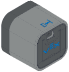
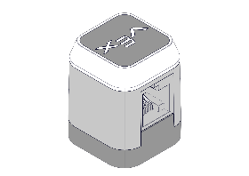
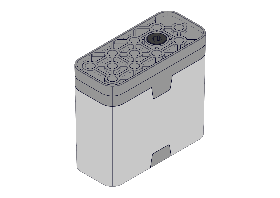
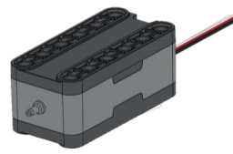
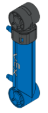

7.8 Gen 2 Core BOM - Part 1
| Category | Part Name | Qty | Photo |
|---|---|---|---|
| Electronics | Brain / Controller | 1 / 1 |  |
| Sensors | Distance Sensor | 2 |  |
| Sensors | Touch LED | 1 |  |
| Power | Smart Motors | 6 |  |
| Pneumatics | Air Tank / Pump | 2 / 1 |  |
| Pneumatics | Cylinders (Long/Short) | 2 / 1 |  |